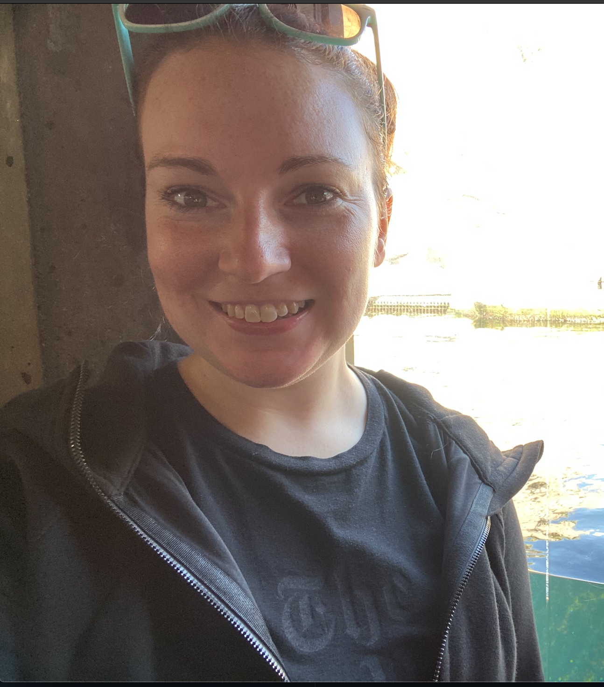

Hi, my name is Hannah Smith. I am originally from the east coast. I am from a small town in North East Connecticut, called Torrington. It is most famous for being the birth place of John Brown the famous abolitionist.
I got my bachelors degree in Geology from Rensselaer Polytechnic Institute. After that I worked in Oil and Gas in Midland, Texas from 2013 to spring 2015. In the Spring of 2015 oil crashed and I transitioned into the tech sector.
I have since worked at Apple maps as both a map digitizer and in IT as a technical support engineer. Most recently I was working as a QA and documentation engineer at a construction startup in Menlo Park, California, but was laid off due to Covid-19.
Pre-Covid, my hobbies included hiking and backpacking. I also enjoy scuba diving. The best spot I have been scuba diving in the world has been The Maldives in 2014.
